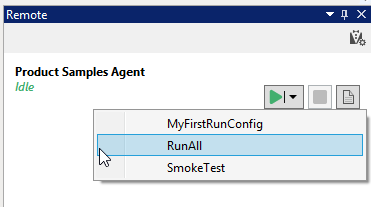

Getting Started with Mobile Testing in Android
Simply follow the steps below to start the sample for mobile testing with Android.
- Connect the device (USB/Wi-Fi)
- Add the device in Ranorex
- Set the name of the device as a parameter value
- Run the sample
- Confirm dialog on device (Wi-Fi only)
To execute your Android test with Ranorex Remote click here.
Connect the device
There are two ways to allow communication between mobile devices and Ranorex, namely via a USB connection and over Wi-Fi.
Add the device in Ranorex
If the endpoints pad is not visible in Ranorex Studio, please open it by clicking the "View Endpoints" button in the toolbar (see screenshot below).

To add a mobile device as an endpoint, simply follow the instructions in our user guide.
Set the name of the device as a parameter value
Once you have added a mobile device, the last step before you run this sample is to set the value of an existing global parameter to the name of the newly added device. To do this, open the "Global Parameters" in the context menu of the Test Suite (see screenshot below).

Now simply set the value of the parameter "Global_DeviceName" to the name of your mobile device (see screenshot below).

Note: If your mobile device is connected via Wi-Fi, please refer to the last step for information.
Run the sample
Make sure your local machine is set as automation root in the endpoint list.
Now the sample is ready to be replayed. Click the Run button in Ranorex Studio to start mobile test automation on Android.
During test run confirm dialog on device (Wi-Fi only)
The first action in the mobile sample deploys the application (app) to the mobile device. If your mobile device is connected via Wi-Fi, you next need to confirm the dialog on the device itself. The dialog asks whether the application should be installed. Simply touch the 'Install' button (see screenshot below).

Executing mobile tests with Ranorex Remote
Note: Please make sure you have successfully completed the instructions 1. to 3. from above and your mobile device is connected to the remote computer via USB or Wi-Fi!
Before you can start executing your Android test cases with Ranorex Remote, you need to prepare your remote computer to match the Ranorex Studio configurations.
Follow the steps below to do so:
- Connect to the remote machine, on which you've previously installed Ranorex Remote.
- Start the application 'Ranorex Settings'.
- On the tab page 'General', press the button 'Mobile Devices...' to manage the mobile device connections on your remote computer.
- Please follow the wizard instructions.
Attention: The display name in Ranorex Remote needs to exactly match the one provided in Ranorex Studio.
- Once you've successfully added your device(s), close 'Ranorex Settings' and switch back to Ranorex Studio.
Follow the steps below to run your mobile tests with Ranorex Remote:
- Add the Ranorex Agent, running on the remote computer, to your agent list in Ranorex Studio.
- Select the run configuration you want to be executed on the remote computer.
- The test cases will be executed on the remote computer. You can use your computer during the test execution.
The following screenshot visualizes how a remote test execution is started using the run configuration 'RunAll' on the remote agent 'Product Samples Agent'.

For additional help, please refer to the section on Android Testing in our Test Automation Guide.